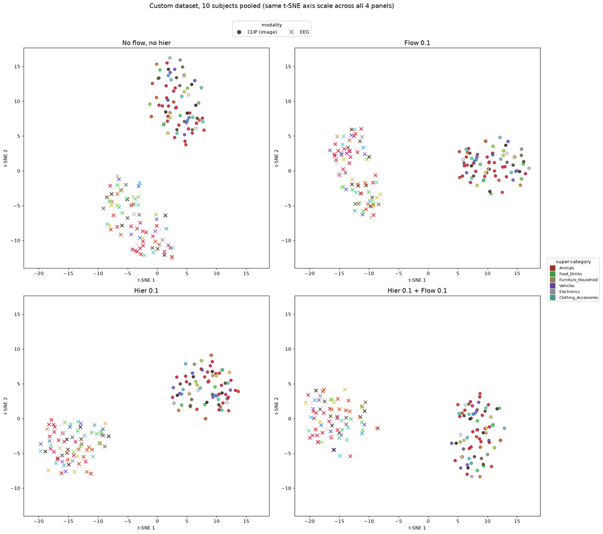
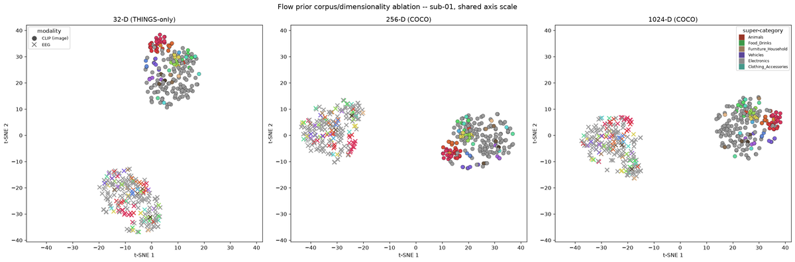
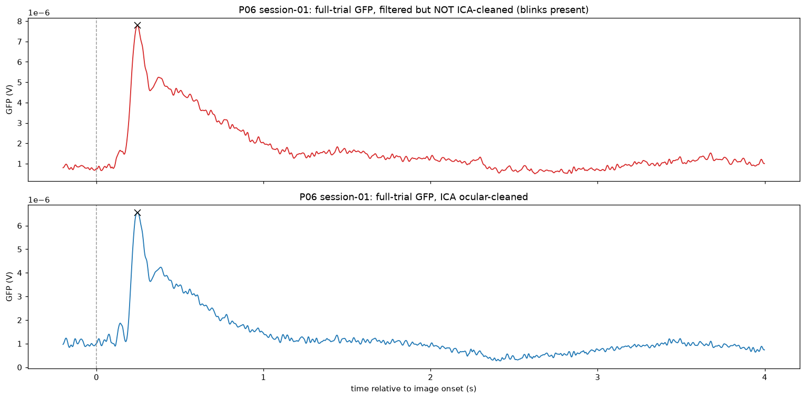

EEG-Vision Representation Alignment
Status: Ongoing (PhD research, in preparation)
Can we recover what a person is looking at from their brain activity alone? This project decodes visual content from non-invasive EEG by aligning brain signals with the embedding space of a pretrained vision-language model (CLIP), and then using that embedding to retrieve and reconstruct the viewed image. Reading a neural representation is the first step towards modulating it, for example in closed-loop stimulation, so decoding sits on the critical path.

Pipeline
- EEG encoder. A transformer-and-CNN encoder with a learned subject token maps each EEG trial to a 1024-d vector in CLIP ViT-H/14 space.
- Contrastive alignment. Each trial is pulled towards its matching image embedding and pushed away from the others. A flow-prior regulariser and a hierarchical loss that distils CLIP's image-to-image similarity structure sit on top of this objective.
- Retrieval. The EEG embedding ranks the candidate CLIP embeddings of real images.
- Generation. A diffusion model (IP-Adapter on SDXL-Turbo) renders an image from the retrieved embedding. A separate EEG-to-VAE-latent head supplies low-level colour and layout.
Experiments use the THINGS-EEG2 dataset: 10 subjects, 63 channels, and 200-way retrieval on held-out concepts.
What the work shows
Reconstruction depends on the conditioning vector lying on the CLIP manifold
Feeding the encoder's raw output to the generator, or passing it through a learned diffusion prior, yields generic images unrelated to the stimulus. Conditioning on a real CLIP embedding selected by the EEG works. Reconstruction quality is therefore governed by whether the conditioning vector lies on the CLIP manifold, more than by how good the encoder is.
Right order, wrong place
A contrastive loss asks only for a ranking, not an absolute position. EEG embeddings can rank the correct image first and still sit in a region of the space where no real image embedding lives, the modality gap. The embedding-space maps below show EEG and image embeddings forming separate clusters.


Top-k retrieval conflates two skills
Retrieval accuracy mixes extraction (did the model find the stimulus signal in the EEG?) and alignment (did it place that signal correctly in CLIP space?). A split-half test isolates extraction without CLIP: average one random half of an image's repetitions, average the other half, and ask whether the two halves match each other. Across three independently built encoders, 97–99% of the stimulus information is found in the EEG, yet only 15–31% reaches CLIP space. This is a property of the paradigm rather than of any single method.
Three failure modes
Decoders can fail at extraction (no stimulus signal recovered), structure (signal recovered but organised differently from CLIP) or placement (right geometry, wrong absolute position). Models rank differently on each axis, so a single retrieval score hides where a decoder breaks. Training across subjects, for instance, exposes a per-subject offset in placement that retrieval accuracy alone would not reveal.
Data quality

This work is in progress; further results will be added once the paper is submitted.